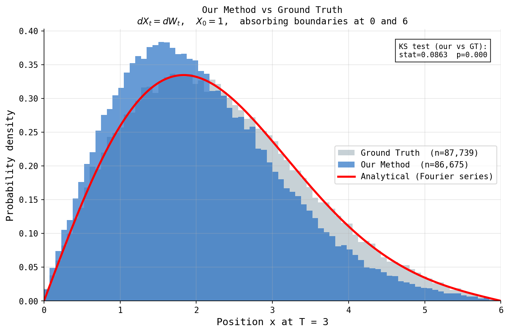

Learning Generative Models
for Physics
Understanding Normalizing Flows, Diffusion Models, and Stochastic Differential Equations — one question at a time.
What problem are we trying to solve?
Imagine a single particle. An electric field pushes it one way. Random collisions knock it around. Occasionally, it jumps — a huge collision all at once. Eventually it hits a boundary and is gone.
Instead of predicting one trajectory, we want the probability of all possible trajectories — the full distribution of where the particle could be.
What is Brownian Motion?
No equations yet. Just 100 particles, moving randomly from the same starting point.
What is an SDE?
Take the same random motion, and add a drift.
What are jumps?
The particle moves normally; then suddenly, it teleports.
Brownian motion = many tiny collisions. A jump = one huge collision.
What is a Transport Problem?
1000 particles start at exactly the same point. After some time, they spread out. The histogram below updates live.
Can we predict where they will be? That is the transport problem.
Why don't we solve the PDE directly?
The transport problem is governed by the heat equation (Fokker–Planck for zero drift):
To solve it numerically, a computer has to grind through a huge system of equations — one unknown per grid cell.
Too expensive. We need another way.
What is the Fokker–Planck equation?
Particles fall into a histogram. The histogram smooths into a curve.
Instead of tracking every particle, we track the density directly.
Why use Generative AI?
Instead of computing millions of particles every time, train one neural network to imitate the distribution directly.
What is a Normalizing Flow?
Take a Gaussian cloud. Stretch it. Twist it. Warp it — like rubber — until it becomes your target distribution.
What is a Diffusion Model?
Start with an image. Add noise. Add more. Add more. Eventually — TV static. Now reverse the process: noise → image.
Why are they different?
Same starting point, same destination — very different paths.
Normalizing Flow
Diffusion
Which one should I use?
| Situation | Use |
|---|---|
| Need exact likelihood | Normalizing Flow |
| Need fastest sampling | Normalizing Flow |
| Images | Diffusion |
| Physics distribution | Both |
| Density estimation | Normalizing Flow |
| Highest sample quality | Diffusion |
What is our research?
Now, finally, the real SDE — drift, noise, and jumps together:
Instead of learning to generate images, we learn the exact conditional transport kernel:
Why train on survivors only?
Three datasets, same architecture, same training procedure — the only difference is which transitions get used for training.



Why do we need an Exit Network?
A particle hits the wall and disappears. A small neural network predicts whether it exits — if yes, remove it; if no, hand it to the flow map.
Why is this faster?
Euler–Maruyama needs hundreds of tiny steps. The flow map needs one.
Euler–Maruyama
Flow Map
Where is this going?
A tokamak. A particle. An electric field. Jumps. A separatrix.
The 1D example is only a verification. The real goal is learning the stochastic flow map of the 2D runaway-electron problem — replacing many small integration steps with one learned, large-step transition.